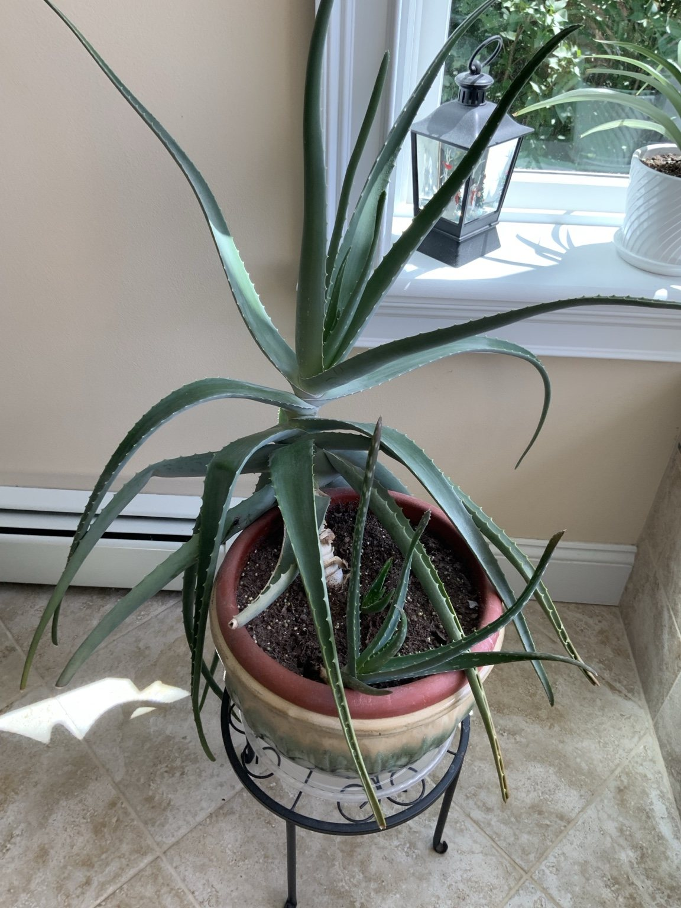

Light
Provide bright light and introduce stronger direct sun gradually.
Watering
Let the potting mix dry well between waterings, then water thoroughly and allow complete drainage.
Feeding
Feed lightly during active spring and summer growth and reduce feeding during winter.
Repotting & Propagation
Use a fast-draining succulent mix and a pot with drainage. Separate offsets once they have enough roots to establish independently.
Seasonal Maintenance
Remove damaged lower leaves, inspect for pests, and adjust watering as indoor light changes.